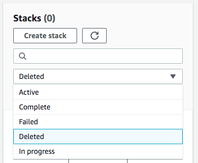

Die vorliegende Übersetzung wurde maschinell erstellt. Im Falle eines Konflikts oder eines Widerspruchs zwischen dieser übersetzten Fassung und der englischen Fassung (einschließlich infolge von Verzögerungen bei der Übersetzung) ist die englische Fassung maßgeblich.
Anzeigen gelöschter Stacks in der - AWS CloudFormation Konsole
Standardmäßig zeigt die AWS CloudFormation Konsole keine Stacks mit dem Status DELETE_COMPLETE an. Um Informationen zu gelöschten Stacks anzuzeigen, müssen Sie die Stack-Anzeigeeinstellung ändern.
So zeigen Sie gelöschte Stacks an
-
Wählen Sie auf der Seite Stacks der - CloudFormation Konsole die Option Gelöscht aus der Filterliste aus.
CloudFormation listet alle Ihre gelöschten Stacks auf (Stacks mit dem Status DELETE_COMPLETE ).
Weitere Informationen finden Sie auch unter